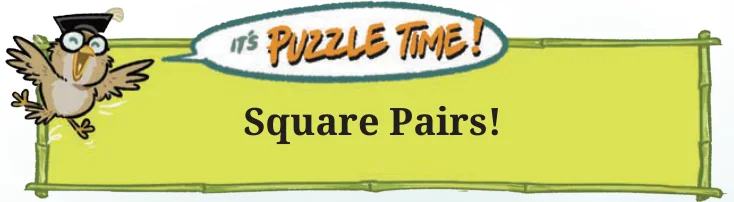
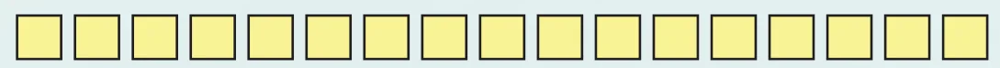
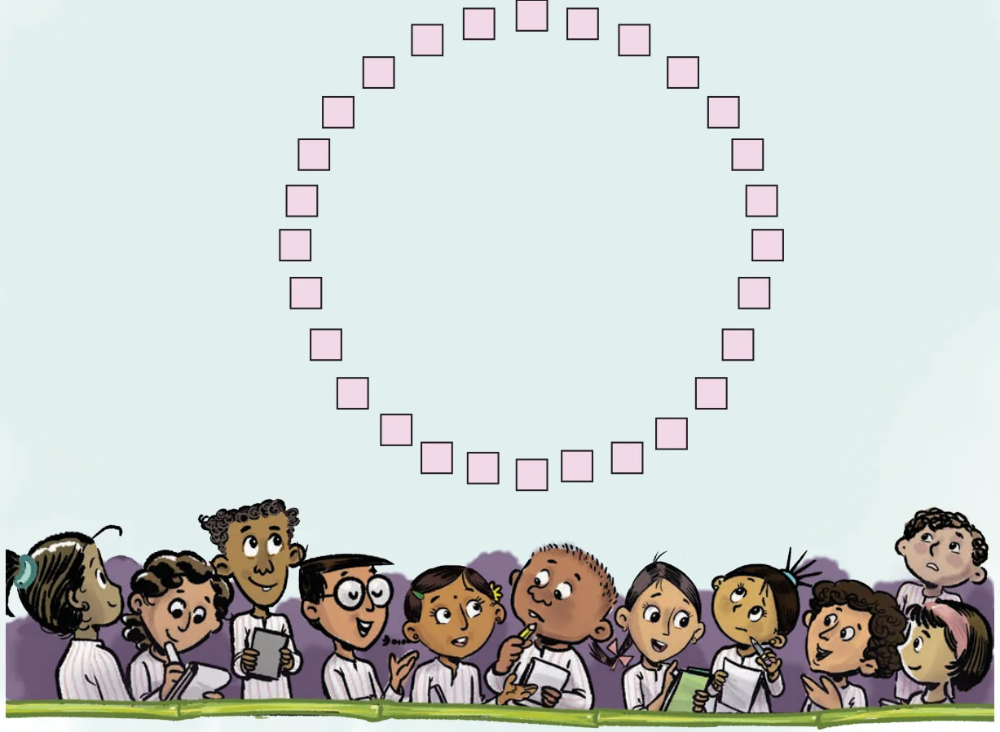

- A number obtained by multiplying a number by itself is called a square number. Squares of natural numbers are called perfect squares.
- All perfect squares end with 0, 1, 4, 5, 6 or 9. Squares can only have an even number of zeros at the end.
- Square root is the inverse operation of square. Every perfect square has two integral square roots. The positive square root of a number is denoted by the symbol \(\sqrt{}\). For example, \(\sqrt{9} = 3\).
- A number obtained by multiplying a number by itself three times is called a cube. For example 1, 8, 27, ..., etc., are cubes.
- A number is a perfect square if its prime factors can be split into two identical groups.
- A number is a perfect cube if its prime factors can be split into three identical groups.
- The symbol \(\sqrt[3]{}\) denotes cube root. For example, \(\sqrt[3]{27} = 3\).

Square Pairs!
Look at the following numbers: 3 6 10 15 1
They are arranged such that each pair of adjacent numbers adds up to a square.
\(3 + 6 = 9\), \(6 + 10 = 16\), \(10 + 15 = 25\), \(15 + 1 = 16\).
Try arranging the numbers 1 to 17 (without repetition) in a row in a similar way — the sum of every adjacent pair of numbers should be a square.
Can you arrange them in more than one way? If not, can you explain why?

Can you do the same with numbers from 1 to 32 (again, without repetition), but this time arranging all the numbers in a circle?

Textbook Answers
Page No. 2
Does every number have an even number of factors?
Ans. No
Can you use this insight to find more numbers with an odd number of factors?
Ans. Yes, all square numbers have an odd number of factors.
Page No. 3
Write the locker numbers that remain open.
Ans. 1, 4, 9, 16, 25, 36, 49, 64, 81, 100.
Page No. 5
Which of the following numbers have the digit 6 in the units place?
(i) \(38^2\) (ii) \(34^2\) (iii) \(46^2\) (iv) \(56^2\) (v) \(74^2\) (vi) \(82^2\)
Ans. (ii) \(34^2\) (iii) \(46^2\) (iv) \(56^2\) (v) \(74^2\)
If a number contains 3 zeros at the end, how many zeros will its square have at the end?
Ans. Six zeros.
What do you notice about the number of zeros at the end of a number and the number of zeros at the end of its square? Will this always happen? Can we say that squares can only have an even number of zeros at the end?
Ans. Number of zeros at the end of the square is double the number of zeros at the end of a number. Yes. Yes.
What can you say about the parity of a number and its square?
Ans. Square of an even number is even & square of an odd number is odd.
Page No. 7
Find how many numbers lie between two consecutive perfect squares. Do you notice a pattern?
Ans. If \(p\) & \(q\) are successive perfect square numbers, then there will be \((q - p - 1)\) numbers between them. Yes.